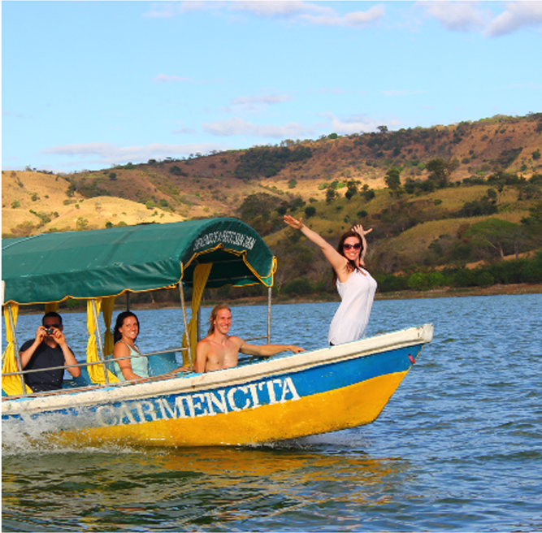
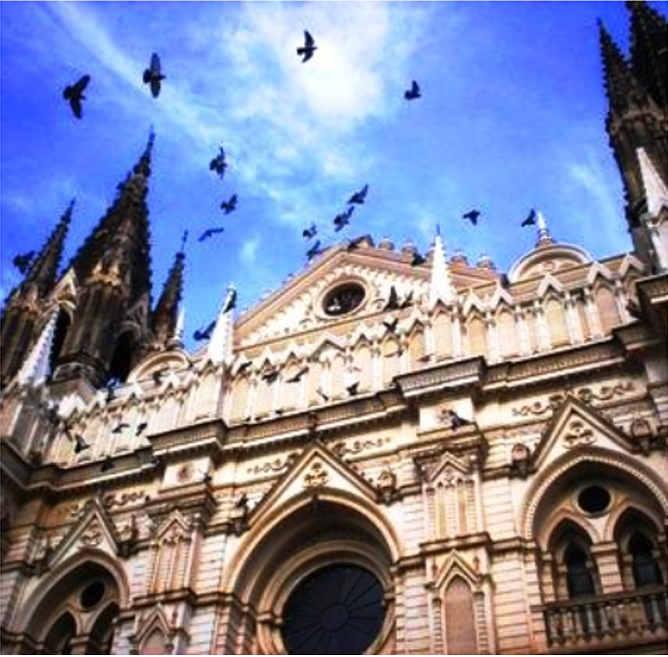
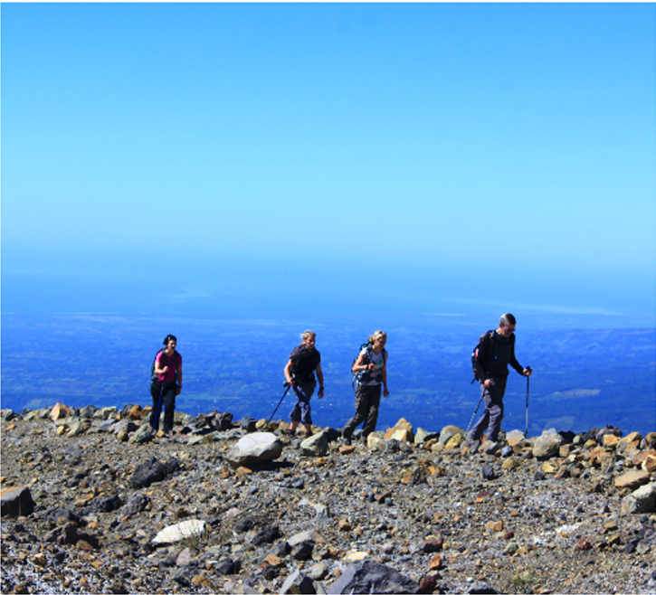
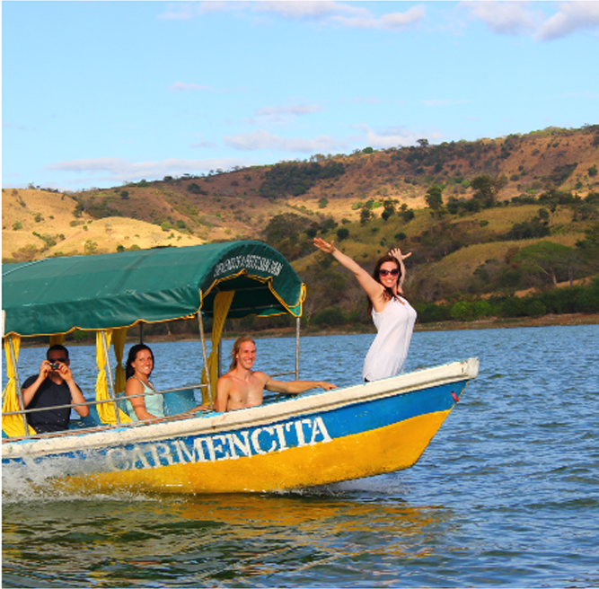
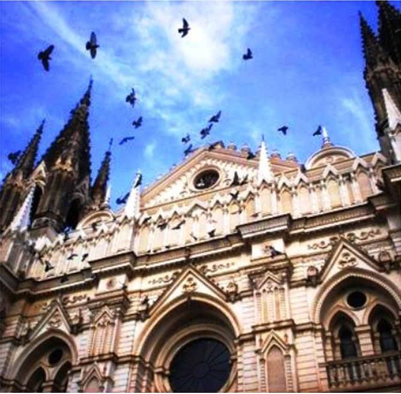
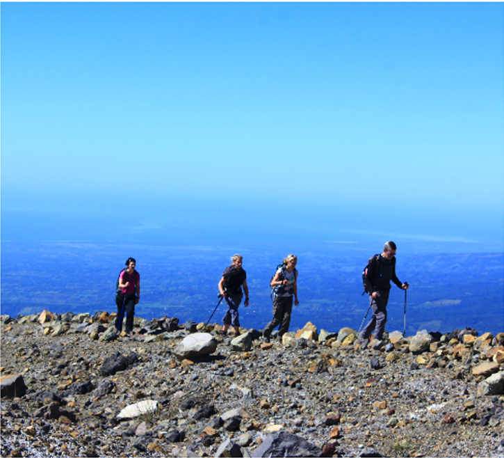

NUESTROS TOURS |
||
ZONA OCCIDENTAL |
ZONA CENTRAL |
ZONA ORIENTAL |
|  |  |  |
Epic Tours El Salvador, es un touroperador Centro Americano con cede en El Salvador; especializado en turismo de aventura, cultura y naturaleza con más de 13 años de experiencia, miembros de la Cámara Salvadoreña de Turismo (CASATUR), de la Asocion Salvadoreña de Operadores de Turismo(ASOTUR) y de Adventure Travel Trade Association(ATTA). Ofrecemos viajes a la medida, adaptados al gusto e interés de nuestros cientes hacia todos los destinos de interés a turisticos en El Salvador y sus países vecinos en C.A. Ofreciendo un servicio más personalizado y atamente interactivo. Trabajamos con Epic Surfing Advenures, una compañia especializada en turismo de surf. Y con nuestra compañia hermana Pure Central América, especializada en tours multy destino para Centro América, donde se hace circuitos en cada región. Epic también maneja 2 hoteles de playa al oriente del país; Hotel Miraflores y Hotel Los Mangos contactanos y conoce más de nuestra empresa.
Ofrecemos servicios de turiso, damos asesorias personalizadas y viajes por todo El Salvador
NUESTROS TOURS |
||
ZONA OCCIDENTAL |
ZONA CENTRAL |
ZONA ORIENTAL |
|  |  |  |